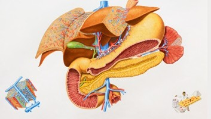
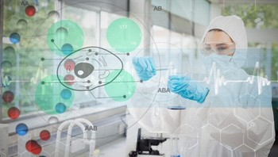
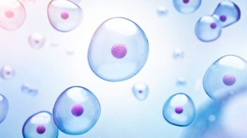

联系热线：400-123-4657


北京某某生物科技有限公司

主要从事研制具有自主知识产权的生物型人工肝，其技术水平应与国际领先水品相当，满足临床需求。
生物型 净化解毒
人工肝 肝脏功能支持系统
生物型 满足临床需求
南京某某生物科技责任有限公司

生物科技发展的目的在于治疗疾病，改善生活品质，提供不虞匮乏的食物及保护我们的居住环境，不过在这项高科技发展过程中如果不加以严格监控，也可能对人类或地球上的生态造成伤害.因此在发展生物科技的过程中，也要同时注意它对人文，道德或生态的冲击。
⒈基因改造食品的认知及消费行为方面：
⑴ 68.1%的民众听过基因改造食品，但是有半数以上的民众不知道基因改造食品有什么好处或坏处。
⑵ 对于目前市面上有哪些产品可能是基因改造食品，32%的民众并不知道；回答知道比例较高的食品是豆腐、豆浆、和其它豆类食品。
⑶ 42.7%的民众平时购买食品时，并不会特别选择购买非基因改造食品。
上海某某细胞生物科技有限公司

生物科技及其社会经济影响是众多媒体的热门话题，从《华尔街日报》到《时代杂志》，再到晚报新闻。生物科技及其商业——即生物物质时代，将作为经济的新引擎而超越信息时代。预计到21世纪中叶，所有公司都会变成生物物质公司，生物物质经济将比以往任何形态的经济发展得更快，更具渗透性，更强有力。作为对未来商业发展的柄质性探讨，《即将到来的生物科技时代》描述了正在先驱性的大学、公司和政府发生的生物科技革命。本书中没有使用任何令人畏惧的学术术语，奥利弗为产席执行官、投资家、决策者，以及对生物物质的社会衍生物感兴趣的人提供了他们必须知道的东西。
《即将到来的生物科技时代》与众不同的关注点是生物科技将对全球经济产生积极的影响。如杜邦、诺华、默沙东等全球名列前茅的化工企业正在转变为生物科技企业，和全球各地的4000多家生物科技公司一起创造新的就业岗位、开发新产品。尽管生物科技潜存着危险，但非常先进的生物科技已经使：全球上亿人受惠于新的生物科技产品和疫苗；成百种生物科技制品正处于临床试验阶段，而更多的产品已经进入开发阶段。